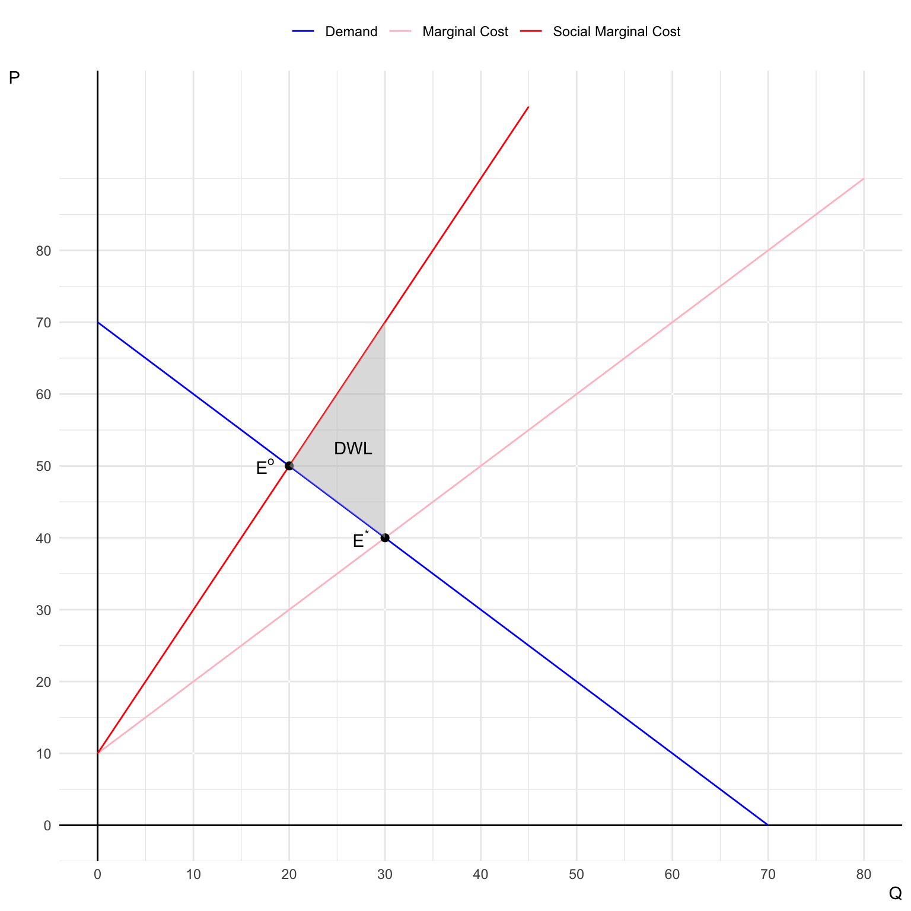
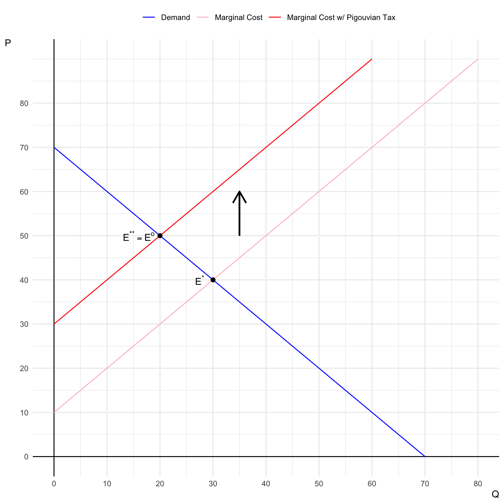

Midterm Exam I
Classwork 8
Section 1. Filling-in-the-Blanks, Multiple Choice, and Short Answer.
True or False
Question 1
Pareto optimality means that no one can be made better off without making someone else worse off. (True)
Question 2
An efficient property rights structure includes exclusivity, transferability, and enforceability. (True)
Question 3
Public goods are characterized by non-excludability and non-rivality. (True)
Question 4
The present value of future benefits is calculated by multiplying the future value by \((1 + r)^n\), where \(r\) is the discount rate and \(n\) is the number of periods. (False)
- The present value of future benefits is calculated by dividing the future value by \((1 + r)^n\), not multiplying.
\[ PV = \frac{FV}{(1+r)^{n}} \]
Question 5
The engineering approach to cost estimation involves asking firms to provide their cost estimates. (False)
- The engineering approach estimates costs based on technical analysis, not by asking firms for their cost estimates.
Multiple Choice
Question 6
The “tragedy of the commons” is most closely associated with which type of property regime?
- Private property regime
- State-property regime
- Common-property regime
- Open-access regime
- The “tragedy of the commons” occurs when resources are freely accessible to everyone (open access) without effective management or ownership. This leads to overuse and depletion because individuals act in their own self-interest without considering the long-term sustainability of the resource.
Question 7
In benefit-cost analysis, benefits are measured as:
- The area under the supply curve
- The area under the demand curve
- The total costs minus total revenue
- The equilibrium price times quantity
- In benefit-cost analysis, benefits are measured by consumers’ total willingness to pay for a good or service. This is represented by the area under the demand curve up to the quantity consumed, reflecting both consumer surplus and total benefits.
Question 8
In the context of risk assessment, “systematic risk” refers to:
- Risks specific to a particular firm or industry
- Risks that affect the entire economic system
- Risks that are unknown and unpredictable
- Risks that can be eliminated through diversification
- Systematic risk, also known as market risk, refers to risks that impact the entire financial system or economy. These risks cannot be eliminated through diversification because they are inherent to the whole market.
Question 9
Dynamic efficiency is achieved when:
- Net benefits are maximized in the current period
- The present value of net benefits over all periods is maximized
- Future benefits are discounted to zero
- The social discount rate is higher than the private discount rate
- Dynamic efficiency is achieved when the allocation of resources maximizes the present value of net benefits over time. This approach accounts for intertemporal trade-offs and ensures optimal resource use across multiple periods.
Question 10
Which of the following is a type of nonuse value?
- Harvesting timber from a forest
- Swimming in a clean lake
- Preserving a species for future generations
- Fishing in a river
- Nonuse value represents the value people assign to environmental goods even if they never use them. Preserving a species for future generations is a nonuse value known as bequest value, reflecting the desire to maintain natural resources for others.
Short Essay
Question 11
Discuss the challenges in estimating the social cost of carbon and how political factors can influence these estimates.
Answer:
Pages 6-20 in Lecture 10 explains the challenges in estimating the social cost of carbon and how political factors can influence these estimates.
The social cost of carbon (SCC) is the estimated present value (in dollars) of the marginal cost of future damages from one additional ton of greenhouse gas emitted.
Challenges in Estimating the SCC:
- Uncertainty in Climate Projections: Predicting the precise impact of carbon emissions on climate systems is complex due to uncertainties in climate sensitivity and feedback loops.
- Economic Modeling Difficulties: Translating physical climate impacts into economic damages involves assumptions about future economic growth, technological advancements, and adaptive capacities.
- Valuation of Non-Market Impacts: Quantifying damages to ecosystems, human health, and biodiversity poses methodological challenges since these do not have market prices.
- Discount Rate Selection: The chosen discount rate significantly affects SCC estimates, with higher rates reducing the present value of future damages.
- Global vs. Domestic Scope: Deciding whether to include global damages or focus solely on domestic impacts can alter SCC values. Influence of Political Factors:
- Policy Objectives: Governments may adjust SCC estimates to align with their policy goals, such as promoting economic growth or environmental protection.
- Regulatory Implications: Higher SCC values justify stricter regulations on emissions, which may face opposition from industries and political groups.
- Administrative Changes: Shifts in political leadership can lead to revisions of SCC methodologies to reflect the new administration’s priorities.
- Pressure from Interest Groups: Lobbying by environmental organizations or industry groups can influence the assumptions and data used in SCC calculations.
Estimating the SCC is inherently challenging due to scientific, economic, and methodological complexities.
Political factors further complicate these estimates by introducing biases that reflect current governmental agendas. Transparency, reliance on scientific consensus, and standardized methodologies are essential to produce credible and policy-relevant SCC estimates.
Question 12
Discuss the potential reasons for the observed discrepancy between willingness to pay (WTP) and willingness to accept (WTA) in environmental valuation studies.
Answer:
- Pages 3-9 in Lecture 15 explains the discrepancy between WTP and WTA.
Section 2. Negative Externalities and Market Failure
Consider a perfectly competitive market for a good whose production generates pollution as a byproduct. The marginal cost (\(MC\)) of producing the good is given by \(MC = 10 + Q\), where \(Q\) is the quantity produced. The social cost includes both the private cost and the external damage of pollution, and the marginal social cost (\(MSC\)) is given by \(MSC = 10 + 2Q\). The market demand is \(P = 70 - Q\).
Q2a.
Determine the market equilibrium quantity and price without government intervention.
Answer:
To find the market equilibrium, set the market demand equal to the marginal cost (since in a competitive market, firms produce where price equals marginal cost):
- Market demand: \(\text{Demand}: MB = 70 - Q\)
- Marginal supply: \(\text{Supply}: MC = 10 + Q\)
At equilibrium, the price (\(P^{*}\)) is such that market clears (\(\text{Demand} = \text{Supply}\)): \[ 70 - Q^{*} = 10 + Q^{*} \]
Therefore, \(Q^{*} = 30\) and \(P^{*} = 40\).
Q2b.
Determine the socially optimal quantity and price that accounts for the externality.
Answer:
At the socially optimal level, set social marginal benefit (\(MB\)) equal to social marginal cost (\(SMC\)):
\[ 70 - Q = 10 + 2Q \] Therefore, \(Q^{o} = 20\) and \(P^{o} = 50\).
Q2c.
Illustrate the market equilibrium and socially optimal equilibrium on a graph.
Answer:
Q2d.
Calculate the deadweight loss associated with the negative externality.
Answer:
Deadweight loss (DWL) due to the externality is the welfare loss from overproduction, which occurs when the market produces more than the socially optimal quantity.
DWL is the triangle area between the social marginal cost and marginal cost curves, between the quantities produced in the market equilibrium and the socially optimal equilibrium.
\[ \begin{align} DWL &= \frac{1}{2}\times(30 - 20)\times(70-40)\\ &= 150 \end{align} \]
Section 3. Pigouvian Tax as a Corrective Measure
Using the same market from Section 2, suppose the government wants to correct the negative externality by imposing a Pigouvian tax.
Q3a.
Calculate the optimal Pigouvian tax per unit that would lead producers to produce the socially optimal quantity.
Answer:
Since the social marginal cost (\(SMC\)) is the sum of the marginal damage and the marginal cost:
\[ \begin{align} MD &= SMC -MC \\ &= (10 + 2Q) - (10 + Q)\\ &= Q \end{align} \]
The optimal Pigouvian tax per unit (\(t^{o}\)) equals the marginal damage at the socially optimal quantity (\(MD(Q^{o})\)). \[ \begin{align} t^{o} &= MD(Q^{o})\\ &= Q^{o}\\ &= 20 \end{align} \]
Q3b.
Compare (1) the socially optimal quantity and price with (2) the market equilibrium quantity and price under the Pigouvian tax.
Answer:
Producers faces the marginal cost with the Pigouvian tax (\(MC'\)) instead of just the marginal private cost. Thus, they will produce at the socially optimal quantity.
\[ \begin{align} MC' &= MC + t^{o} \\ &= (10 + Q) + 20\\ &= 30 + Q \end{align} \] At equilibrium, the price (\(P^{**}\)) is such that market clears: \[ 70 - Q^{**} = 30 + Q^{**} \] Therefore, \(Q^{**} = 20\) and \(P^{**} = 50\), which are the same as the socially optimal level.
Q3c.
Illustrate the effect of the Pigouvian tax on the market equilibrium.
Answer:

Q3d.
Calculate the government revenue generated by the Pigouvian tax and discuss the effect of the Pigouvian tax on (1) consumer surplus (\(CS\)), (2) producer surplus (\(PS\)), and (3) external damage (\(TD\)).
Answer:
Government revenue \(G\) is \(G^{**} = t^{o}\times Q^{**} = 20 \times 20 = \$400\).
The following is the change in \(CS\) due to the Pigouvian tax: \[ \begin{align} CS^{*} &= \frac{1}{2}\times 30 \times (70-40) = \$450\\ CS^{**} &= \frac{1}{2}\times 20 \times (70-50) = \$200\\ PS^{*} &= \frac{1}{2}\times 30 \times (40-10) = \$450\\ PS^{**} &= \frac{1}{2}\times 20 \times (50-30) = \$200\\ TD^{*} &= \frac{1}{2}\times 30 \times 30 = \$450\\ TD^{**} &= \frac{1}{2}\times 20 \times 20 = \$200\\ \end{align} \]
Social welfare (\(SW\)) can be measured by the total surplus plus government revenue (if any) minus total external damage:
\[ \begin{align} SW^{*} = CS^{*} + PS^{*} - TD^{*} = \$450\\ SW^{**} = CS^{**} + PS^{**} + G^{**} - TD^{**} = \$600\\ \end{align} \]
- Changes Due to the Tax:
- Consumer Surplus: Decreases from $450 to $200 (a loss of $250).
- Producer Surplus: Decreases from $450 to $200 (a loss of $250).
- External Damage: Decreases from $450 to $200 (a reduction of $250).
- Government Revenue: Increases from $0 to $400.
Section 4. Public Goods and Income Inequality
The town of Geneseo has two residents: Ben and Tiana. The town currently funds its sustainability department solely from the individual contributions of Ben and Tiana.
Ben and Tiana have their own utility functions, \(U_{B}\) and \(U_{T}\) respectively, over private goods ( \(X\) ) and total sustainability workers ( \(M\) ) of the forms:
\[ U_{B} = \log(X_{B}) + \log(M); \]
\[ U_{T} = \log(X_{T}) + \log(M). \] The total provision of sustainability workers hired, \(M\), is the sum of the number hired by each of the two persons:
\[ M = M_{B} + M_{T}. \] Let’s consider the share of Geneseo’s income held by Ben and by Tiana, respectively.
Ben has income of \(\$100\times\alpha\), and Tiana has income of \(\$100\times (1-\alpha)\), where \(\alpha\) is the share of Ben’s income. Assume that the income inequality in Geneseo is sufficiently moderate, so that
\[ \frac{1}{3}\leq \alpha \leq \frac{2}{3} \]
The price of both the private good and the sustainability worker is \(\$1\).
The following is Ben’s utility maximization problem:
\[ \begin{aligned} \max_{X_{B},\, M_{B}}\; U_{B} \,=\, \log(X_{B}) + \log(M)\\ \text{subject to}\quad 100\alpha \,\geq\, X_{B} \,+\, M_{B}\\ M \,=\, M_{B} \,+\, M_{T} \end{aligned} \]
Taking the Tiana’s action and the prices of the private good and the sustainability worker as given, Ben maximizes his utility:
\[ \max_{M_{B}}\; U_{B} = \log(100\alpha - M_{B}) + \log(M_{B} + M_{T}),\tag{UMax-B} \] where \(X_{B} = 100\alpha - M_{B}\).
The first-order condition for problem (Umax-B) is:
\[ \frac{d U_{B}}{dM_{B}} = -\frac{1}{100\alpha -M_{B}} + \frac{1}{M_{B} + M_{T}} = 0.\tag{FOC-B} \] (FOC-B) simplifies to
\[ M_{B} = \frac{1}{2}(100\alpha - M_{T}).\tag{Action-B} \]
The following is Tiana’s utility maximization problem:
\[ \begin{aligned} \max_{X_{T},\, M_{T}}\; U_{T} \,=\, \log(X_{T}) + \log(T)\\ \text{subject to}\quad 100(1-\alpha) \,\geq\, X_{B} \,+\, M_{B}\\ M \,=\, M_{B} \,+\, M_{T} \end{aligned} \]
Taking the Ben’s action and the prices of the private good and the sustainability worker as given, Tiana maximizes her utility:
\[ \max_{M_{T}}\; U_{T} = \log(100(1-\alpha) - M_{T}) + \log(M_{B} + M_{T}),\tag{UMax-T} \] where \(X_{T} = 100(1-\alpha) - M_{T}\).
The first-order condition for problem (Umax-T) is:
\[ \frac{d U_{T}}{dM_{T}} = -\frac{1}{100(1-\alpha)-M_{T}} + \frac{1}{M_{B} + M_{T}} = 0.\tag{FOC-T} \] (FOC-T) simplifies to
\[ M_{T} = \frac{1}{2}[\,100(1-\alpha) - M_{B}\,]\tag{Action-T} \]
Let us assume the existence of a benevolent Social Planner who makes all the decisions in the Geneseo economy. The Social Planner is benevolent because the Social Planner’s objective is to maximize the social welfare (\(SW = U_{B} \,+\, U_{T}\)) by allocating available resources in the economy.
The Social Planner solves the following social welfare maximization problem:
\[ \begin{aligned} \max_{X_{B},\, M_{B}, X_{T},\, M_{T}}\; SW \,=\, \log(X_{B}) \,+\, \log(X_{T}) \,+\, 2 × \log(M)\\ \text{subject to}\quad 100\alpha \,\geq\, X_{B} \,+\, M_{B}\\ 100(1-\alpha) \,\geq\, X_{T} \,+\, M_{T}\\ M \,=\, M_{B} \,+\, M_{T} \end{aligned} \] Note that both (Budget-Ben) and (Budget-Tiana) hold with equality at the socially optimal level of bundle \((X_{B}^{o}, M_{B}^{o}, X_{T}^{o}, M_{T}^{o})\) the Geneseo Government would like to achieve.
Taking the Ben’s and Tiana’s budget constraints and the prices as given, the Social Planner maximizes the social welfare:
\[ \max_{ M_{B},\, M_{T}}\; SW \,=\, \log(100\alpha-M_{B}) \,+\, \log(100(1-\alpha) - M_{T}) \,+\, 2 × \log(M_{B} + M_{T})\tag{SW-Max} \]
First-order conditions for problem (SW-Max) are:
\[ \frac{\partial SW}{\partial M_{B}} = -\frac{1}{100\alpha-M_{B}} + \frac{2}{M_{B}+M_{T}} = 0; \tag{FOC-SW-B} \]
\[ \frac{\partial SW}{\partial M_{T}} = -\frac{1}{100(1-\alpha)-M_{T}} + \frac{2}{M_{B}+M_{T}} = 0. \tag{FOC-SW-T} \] (FOC-SW-B) and (FOC-SW-T) simplify to
\[ M_{B} = \frac{1}{3}(200\alpha - M_{T});\tag{Action-SW-B} \]
\[ M_{T} = \frac{1}{3}[\,200(1-\alpha) - M_{B}\,].\tag{Action-SW-T} \]
Q4a.
- In Equation (FOC-B),
\[ \frac{d U_{B}}{dM_{B}} = -\frac{1}{100\alpha-M_{B}} + \frac{1}{M_{B} + M_{T}} = 0.\tag{FOC-B} \]
- What term is Ben’s marginal cost of increasing the number of sustainability workers by one unit?
- What term is Ben’s marginal benefit of adding one additional sustainability worker?
Answer:
Ben’s marginal cost of increasing the number of sustainability workers by one unit \[ -\frac{1}{100\alpha -M_{B}} \]
Ben’s marginal benefit of adding one additional sustainability worker by one unit \[ \frac{1}{M_{B} + M_{T}} \]
Q4b.
- Explain the economic intuition behind equations (Action-B) and (Action-T).
- Why might each entity reduce its contribution to the sustainability workers as the other increases theirs?
\[ M_{B} = \frac{1}{2}(100\alpha - M_{T}).\tag{Action-B} \]
\[ M_{T} = \frac{1}{2}[\,100(1-\alpha) - M_{B}\,]\tag{Action-T} \]
Answer:
Economic intuition behind equations (Action-B) and (Action-T).
In a market equilibrium, each individual will make choices that equate their marginal utility (the additional satisfaction from consuming one more unit of a good) to the cost of that good. In this context, for the last sustainability worker hired, the marginal utility that each resident (Ben and Tiana) receives from the public good (sustainability workers) equals the marginal utility they get from consuming a private good. This is because, in equilibrium, people allocate their resources in a way that balances the benefits they get from different types of consumption.
Public Goods and Free-Riding
- A public good is something that benefits everyone, and one person’s use of it doesn’t reduce its availability for others. Because of this, people often have an incentive to free-ride, meaning they hope others will contribute to the public good (like hiring sustainability workers) while they enjoy the benefits without contributing themselves.
In this question, Ben and Tiana individually do not fully appreciate the benefit of hiring more sustainability workers because they only consider their own marginal benefit, not the total benefit to society (the social marginal utility). This leads to an incentive for free-riding—each of them would prefer the other to contribute more while they contribute less.
Q4c.
Using Equations (Action-B) and (Action-T), we can solve the equilibrium level of sustainability workers that are paid for by Ben and by Tiana \((M_{B}^{*}, M_{T}^{*})\):
\[ M_{B}^{*} = 100\left(\alpha - \frac{1}{3}\right) \]
\[ M_{T}^{*} = 100\left(\frac{2}{3} - \alpha \right) \]
- How does \(M_{B}^{*}\) vary with \(\alpha\)?
- How does \(M_{T}^{*}\) vary with \(\alpha\)?
- How does the total provision of sustainability workers \(M^{*}\) vary with \(\alpha\), where \(M^{*} = M_{B}^{*} + M_{t}^{*}\)?
Answer:
\(M_{B}^{*}\) increases with \(\alpha\): \[ \frac{d M_{B}^{*}}{d \alpha} > 0. \]
\(M_{T}^{*}\) decreases with \(\alpha\): \[ \frac{d M_{T}^{*}}{d \alpha} < 0. \]
\(M^{*} = 100\) does not vary with \(\alpha\).
Q4d.
- Equations (Action-B) and (Action-T) characterize the equilibrium level of sustainability workers.
\[ M_{B} = \frac{1}{2}(100\alpha - M_{T}).\tag{Action-B} \]
\[ M_{T} = \frac{1}{2}[\,100(1-\alpha) - M_{B}\,]\tag{Action-T} \]
- Equations (Action-SW-B) and (Action-SW-T) characterize the socially optimal level of sustainability workers.
\[ M_{B} = \frac{1}{3}(200\alpha - M_{T}).\tag{Action-SW-B} \]
\[ M_{T} = \frac{1}{3}[\,200(1-\alpha) - M_{B}\,]\tag{Action-SW-T} \]
- Why are (Action-B) and (Action-SW-B) different? Why are (Action-T) and (Action-SW-T) different?
Answer:
Social marginal utility, (Action-SW-B) and (Action-SW-T), refers to the total benefit society gets from an additional unit of a public good (in this case, a sustainability worker). The social marginal utility is the sum of the marginal utilities that each resident (Ben and Tiana) gets from the last sustainability worker.
Individual marginal utility, (Action-B) and (Action-T), is the benefit a single person (either Ben or Tiana) receives from the same worker. Since sustainability workers provide a public good that benefits everyone, the social marginal utility of an additional worker is greater than any individual’s marginal utility because it includes the benefits to both residents combined.
Q4e.
Using Equations (Action-SW-B) and (Action-SW-T), we can solve the socially optimal level of sustainability workers that are paid for by Ben and by Tiana \((M_{B}^{o}, M_{T}^{o})\):
\[ \begin{aligned} M_{B}^{o} = 100\alpha - 25\\ M_{T}^{o} = 75 - 100\alpha \end{aligned} \]
Below is the equilibrium level of sustainability workers that are paid for by Ben and by Tiana \((M_{B}^{*}, M_{T}^{*})\):
\[ \begin{aligned} M_{B}^{*} = 100\left(\alpha - \frac{1}{3}\right)\\ M_{T}^{*} = 100\left(\frac{2}{3} - \alpha \right) \end{aligned} \]
- Compare \(M_{B}^{o}\) with \(M_{B}^{*}\).
- Compare \(M_{T}^{o}\) with \(M_{T}^{*}\).
- Compare the welfare-maximizing provision of sustainability workers \(M^{o}\) with \(M^{*}\), where \(M^{o} = M_{B}^{o} + M_{t}^{o}\).
Answer:
\[ \begin{align} M_{B}^{o} - M_{B}^{*} &= 100\alpha - 25 - 100\left(\alpha - \frac{1}{3}\right)\\ &= -25 +\frac{100}{3}\\ &> 0 \end{align} \]
Therefore, \(M_{B}^{o} > M_{B}^{*}\).
\[ \begin{align} M_{T}^{o} - M_{T}^{*} &= 75 - 100\alpha - 100\left(\frac{2}{3} - \alpha \right)\\ &= 75 -\frac{200}{3}\\ &> 0 \end{align} \]
Therefore, \(M_{T}^{o} > M_{T}^{*}\).
Thus, \(M^{o} > M^{*}\).
Q4f
How would redistributing income between Ben and Tiana affect the total provision of the sustainability workers in Geneseo? Also, provide your intuition on the income redistribution policy in Geneseo.
Answer:
As income is redistributed—shifting \(\alpha\) upwards (increasing Ben’s income while decreasing Tiana’s)—Ben hires more sustainability workers, while Tiana hires fewer. However, the total number of workers \(M^{*}\) remains constant because the community’s total income (and thus total capacity to hire) is fixed. In other words, increasing Ben’s share \(\alpha\) does not increase overall sustainability employment; it only changes who can afford to employ these workers.
Ultimately, the total amount of hiring power in the community does not grow with income redistribution alone. Without increasing the total income available, changes in \(\alpha\) merely reallocate the same fixed pool of sustainability workers between individuals, leaving the aggregate number of workers employed unchanged.
Q4g.
The Geneseo Government introduces a contribution matching policy. For every unit of contribution to sustainability workers made by Ben or Tiana, the government contributes an additional fraction \(s\) of that unit. Therefore, the total number of sustainability workers \(M\) will be:
\[ M = (1 + s) \times (M_{B} + M_{T}) \]
- What is economic intuition on this matching program?
Answer:
This matching program tries to incentivize Geneseo residents to hire more sustainability workers, demonstrating how a matching grant can theoretically solve the free-rider problem. But it may also involve some practical challenges in implementing such a program:
- Funding: Securing sustainable funding for the matching grant program could be challenging, especially in resource-constrained environments.
- Equity concerns: The program might disproportionately benefit wealthier villagers who can afford larger contributions.
- Long-term sustainability: There’s a risk of creating dependency on the matching grants, potentially reducing intrinsic motivation for conservation.
- Administrative costs: Implementing and monitoring the program would require resources and could be complex in a village setting.
- Potential for strategic behavior: Villagers might coordinate to maximize the matching funds, which could lead to inefficiencies.
- Calibration: Determining the optimal matching rate in practice could be difficult and may need to be adjusted over time.
- Spillover effects: The program might have positive externalities by fostering a culture of conservation and community cooperation.
Q4h.
Under the contribution matching policy, described in Q4f, the number of sustainability workers made by Ben and Tiana, denoted by \((M_{B}^{**}, M_{T}^{**})\), are surprisingly the same as \((M_{B}^{*}, M_{T}^{*})\):
\[ \begin{aligned} M_{B}^{**} = 100\left(\alpha - \frac{1}{3}\right) = M_{B}^{*}\\ M_{T}^{**} = 100\left(\frac{2}{3} - \alpha \right) = M_{T}^{*} \end{aligned} \]
However, because of the program, the total provision of sustainability workers under the matching program will be larger than \(M^{*}\). Therefore, both Ben can Tiana could enjoy having more sustainability workers:
\[ M^{**} = (1 + s) \times (M_{B}^{**} + M_{T}^{**}) \]
- What is the optimal fraction \(s^{o}\) that induces the socially optimal level of total sustainability workers \(M^{o} = M^{**}\) in Geneseo?
- What is the cost of implementing this matching program with the optimal fraction \(s^{o}\)?
Answer:
\[ \begin{aligned} M^{o} &= M_{B}^{o} + M_{T}^{o} \\ &= 100\alpha - 25 + 75 - 100\alpha\\ &= 50 \end{aligned} \]
\[ \begin{aligned} M^{*} &= M_{B}^{*} + M_{T}^{*}\\ &= 100\left(\alpha - \frac{1}{3}\right) + 100\left(\frac{2}{3} - \alpha \right)\\ &= \frac{100}{3} \end{aligned} \]
Therefore,
\[ \begin{aligned} M^{**} &= M^{o}\\ (1 + s)\times \frac{100}{3} &= 50\\ \end{aligned} \]
Therefore,
\[ s^{o} = \frac{1}{2}. \]